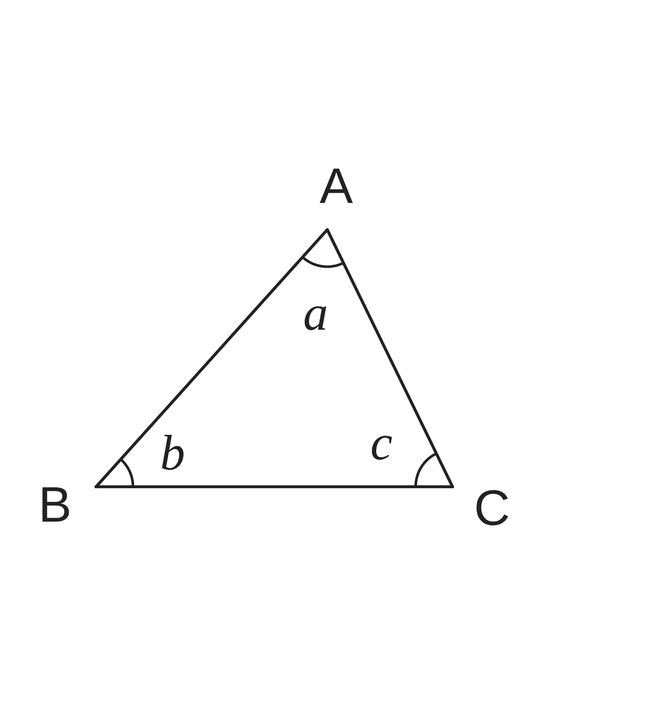
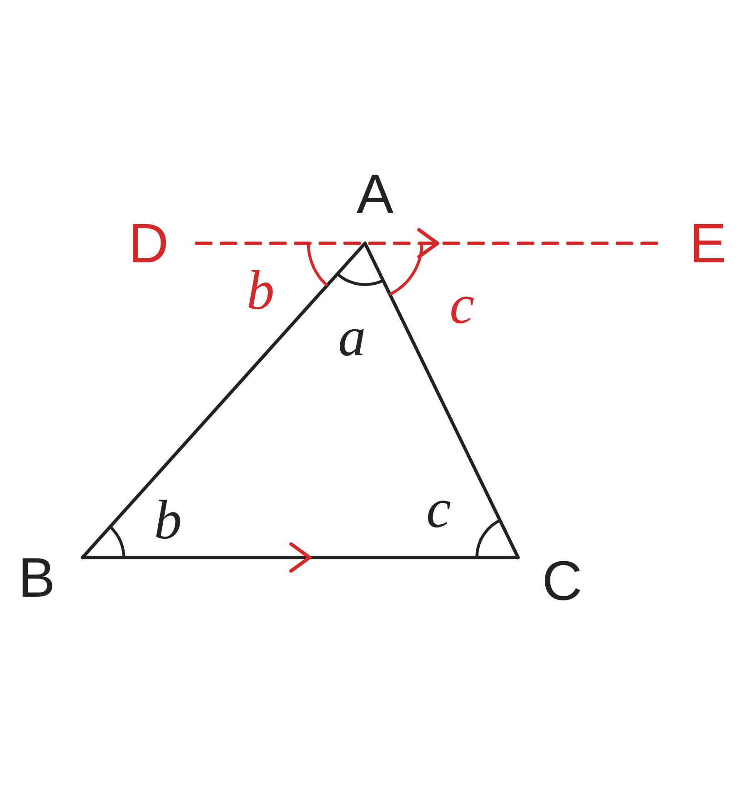
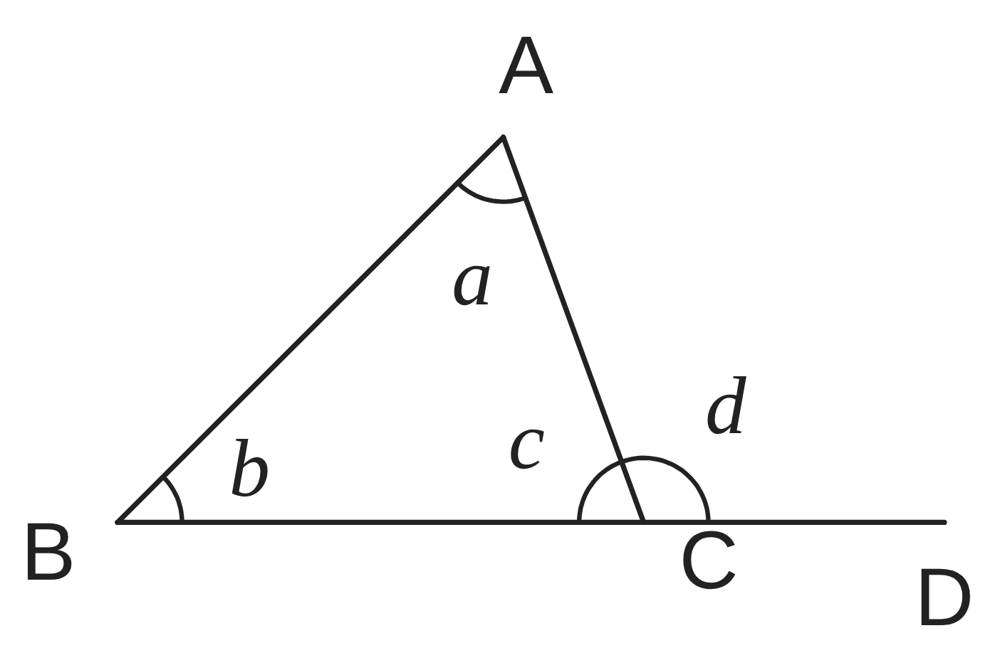
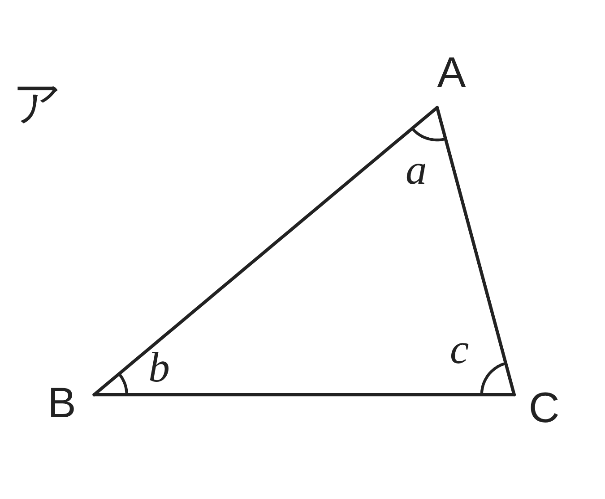
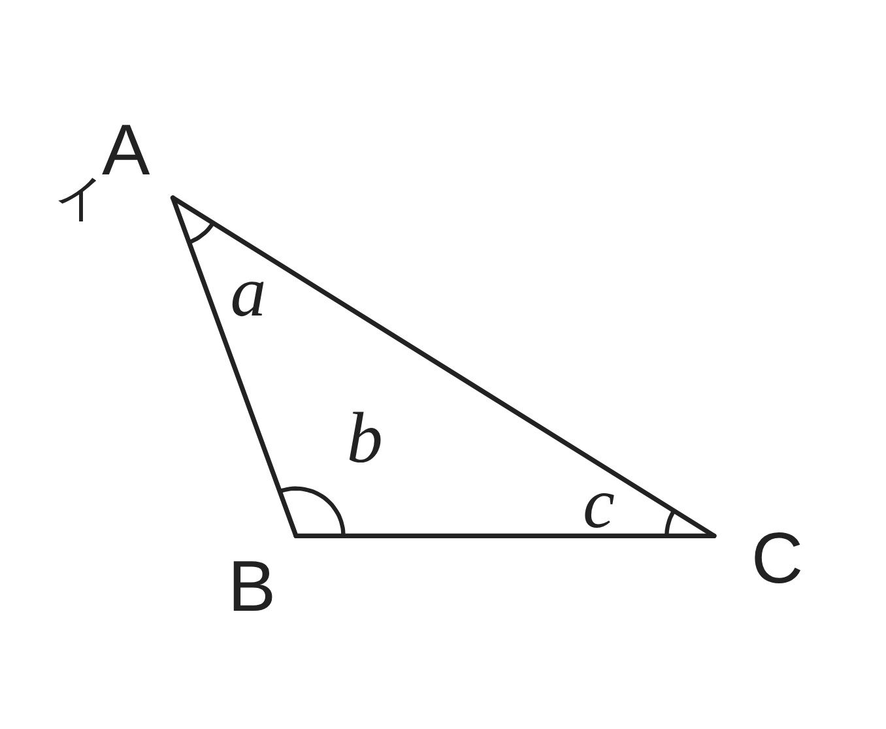
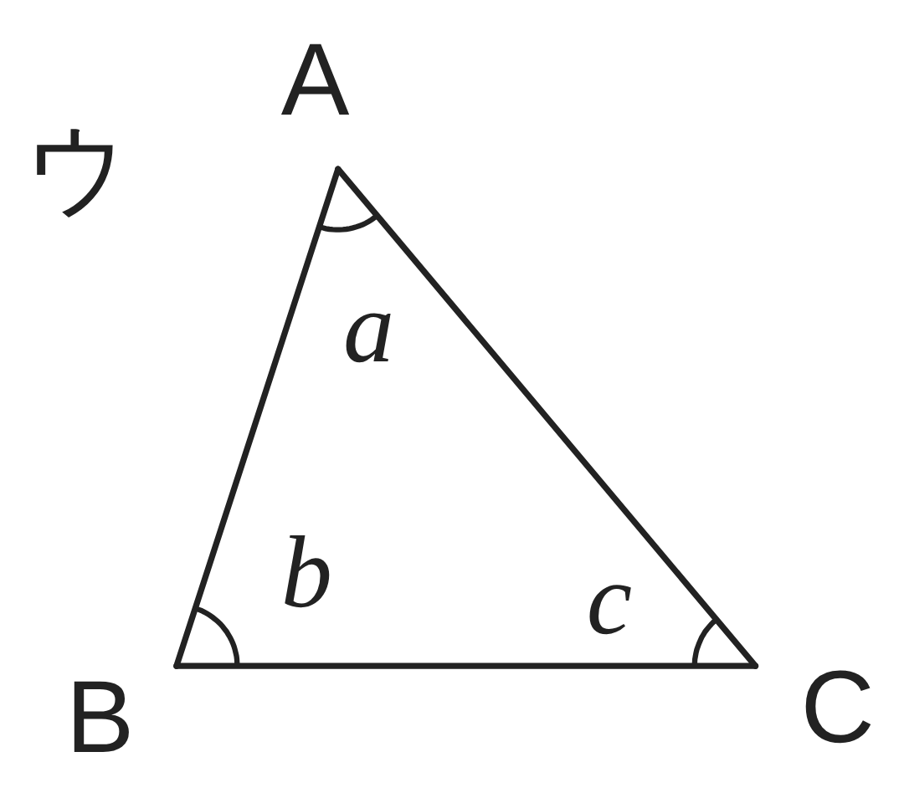

ペア学習
第3時 三角形の内角の和が180°になるわけを説明しよう
前の時間の重要語句を、ペアで出し合おう
第2時の重要語句から、1人1問ずつ、言葉を選んで出題する。
聞かれた人は、その言葉の意味を、自分の言葉で言う。
平行
平行線の性質
平行線になる条件
平行と合同 第3時 三角形の内角の和が180°になるわけを説明しよう
めあて
第3時 三角形の内角の和が180°になるわけを説明しよう
三角形の内角の和が 180° になるわけを説明しよう
学習課題
小学校では、三角形の3つの角を切りとって
ならべて、和が 180° になることを確かめた。
どんな三角形でも、内角の和が 180° になる
わけを、平行線の性質を使って説明しよう。
右の図に、線を1本かき加えて考えよう。

平行と合同 第3時 三角形の内角の和が180°になるわけを説明しよう
学習課題のまとめ
第3時 三角形の内角の和が180°になるわけを説明しよう
【ひく線】
A を通り、辺 BC に平行な直線 DE
【説明】
A を通り BC に平行な直線 DE をひく。
平行線の錯角は等しいから
∠DAB＝∠b、∠EAC＝∠c
点 A のまわりで、一直線の角は 180° だから
∠DAB＋∠a＋∠EAC＝180°
よって ∠a＋∠b＋∠c＝180°

平行と合同 第3時 三角形の内角の和が180°になるわけを説明しよう
ことば
第3時 三角形の内角の和が180°になるわけを説明しよう
多角形の内側の角を という。
1つの辺と、となりの辺をのばした線がつくる角を
という。
三角形の内角の和は である。
三角形の外角は、
それととなり合わない 2つの内角の に等しい。
説明のために、かき加える線を という。
平行と合同 第3時 三角形の内角の和が180°になるわけを説明しよう
ことば
第3時 三角形の内角の和が180°になるわけを説明しよう
多角形の内側の角を内角という。
1つの辺と、となりの辺をのばした線がつくる角を
外角という。
三角形の内角の和は180°である。
三角形の外角は、
それととなり合わない 2つの内角の和に等しい。
説明のために、かき加える線を補助線という。
平行と合同 第3時 三角形の内角の和が180°になるわけを説明しよう
例題
第3時 三角形の内角の和が180°になるわけを説明しよう
右の図で、∠d は、△ABC の外角である。
∠d＝∠a＋∠b であるわけを、
と を使って
説明しよう。

平行と合同 第3時 三角形の内角の和が180°になるわけを説明しよう
例題 解答
第3時 三角形の内角の和が180°になるわけを説明しよう
使うこと … 内角の和、一直線の角
△ABC の内角の和は 180° だから
∠a＋∠b＋∠c＝180° …①
一直線の角は 180° だから
∠c＋∠d＝180° …②
①、② より ∠d＝∠a＋∠b

平行と合同 第3時 三角形の内角の和が180°になるわけを説明しよう
考えよう
第3時 三角形の内角の和が180°になるわけを説明しよう
学習課題とはちがう線をひいても、
内角の和が 180° になるわけを、
説明できるだろうか。
① ア〜ウの図に、学習課題とは
ちがう線を、かき加えよう。
等しい角には、同じ印をつけよう。
（何本ひいてもよい）
② ひいた線をもとに、内角の和が
180° になるわけを、説明しよう。
③ いくつかの説明を、
くらべよう。気づいたことを書こう。



発展
四角形の内角の和は、
何度になるだろう。
三角形の内角の和が
180° であることを
使って、考えよう。
平行と合同 第3時 三角形の内角の和が180°になるわけを説明しよう
振り返り
第3時 三角形の内角の和が180°になるわけを説明しよう
今日のめあて
三角形の内角の和が 180° になるわけを説明しよう
内角
外角
補助線
今日わかったことを、ペアで1つずつ言い合おう。
ワークシートと演習プリントを出そう。（未完成でも出す）
平行と合同 第3時 三角形の内角の和が180°になるわけを説明しよう